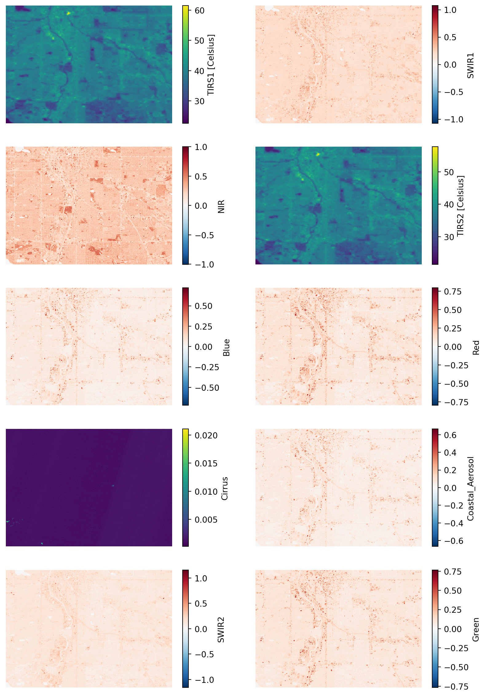

%store band_dictStored 'band_dict' (dict)Raster data is arranged on a grid – for example a digital photograph.
Learn more about raster data at this Introduction to Raster Data with Python
For this case study, you will need a library for working with geospatial raster data (rioxarray), more advanced libraries for working with data from the internet and files on your computer (requests, zipfile, io, re). You will need to add:
# Reproducible file paths
import re # Extract metadata from file names
import zipfile # Work with zip files
from io import BytesIO # Stream binary (zip) files
# Find files by pattern
import numpy as np # Unpack bit-wise Fmask
import requests # Request data over HTTP
import rioxarray as rxr # Work with geospatial raster dataimport os # Reproducible file paths
import re # Extract metadata from file names
import zipfile # Work with zip files
from io import BytesIO # Stream binary (zip) files
from glob import glob # Find files by pattern
import numpy as np # Unpack bit-wise Fmask
import matplotlib.pyplot as plt # Make subplots
import requests # Request data over HTTP
import rioxarray as rxr # Work with geospatial raster data.tif files.# Prepare URL and file path for download
# Download sample raster data
response = requests.get(url)
# Save the raster data (uncompressed)
with zipfile.ZipFile(BytesIO(response.content)) as sample_data_zip:
sample_data_zip.extractall(sample_data_dir)# Prepare URL and file path for download
hls_url = (
"https://github.com/cu-esiil-edu/esiil-learning-portal/releases"
"/download/data-release/redlining-foundations-data.zip"
)
hls_dir = os.path.join(data_dir, 'hls')
if not glob(os.path.join(hls_dir, '*.tif')):
# Download sample raster data
hls_response = requests.get(hls_url)
# Save the raster data (uncompressed)
with zipfile.ZipFile(BytesIO(hls_response.content)) as hls_zip:
hls_zip.extractall(hls_dir)The data you just downloaded is multispectral raster data. When you take a color photograph, your camera actually takes three images that get combined – a red, a green, and a blue image (or band, or channel). Multispectral data is a little like that, except that it also often contains spectral bands from outside the range human eyes can see. In this case, you should have a Near-Infrared (NIR) band as well as the red, green, and blue.
This multispectral data is part of the Harmonized Landsat Sentinel 30m dataset (HLSL30), which is a combination of data taken by the NASA Landsat missions and the European Space Agency (ESA) Sentinel-2 mission. Both missions collect multispectral data, and combining them gives us more frequent images, usually every 2-3 days. Because they are harmonized with Landsat satellites, they are also comparable with Landsat data from previous missions, which go back to the 1980s.
Learn more about multispectral data in this Introduction to Multispectral Remote Sensing Data
For now, we’ll work with the green layer to get some practice opening up raster data.
One of the files you downloaded should contain the green band. To open it up:
Bxx where xx is the two-digit band number.mask_and_scale=True parameter to the rxr.open_rasterio function. Now your values should run between 0 and about .25. mask_and_scale=True also represents nodata or na values correctly as nan rather than, in this case -9999. However, this image has been cropped so there are no nodata values in it.band, y, and x. You can see the dimensions in parentheses just to the right of xarray.DataArray in the displayed version of the DataArray. Sometimes we do have arrays with different bands, for example if different multispectral bands are contained in the same file. However, band in this case is not giving us any information; it’s an artifact of how Python interacts with the geoTIFF file format. Drop it as a dimension by using the .squeeze() method on your DataArray. This makes certain concatenation and plotting operations go smoother – you pretty much always want to do this when importing a DataArray with rioxarray.# Find the path to the green layer
# Open the green data in Python
green_da = rxr.open_rasterio(green_path)
display(green_da)
green_da.plot(cmap='Greens', vmin=0, robust=True)# Find the path to the green layer
green_path = glob(os.path.join(hls_dir, '*B03*.tif'))[0]
# Open the green data in Python
green_da = rxr.open_rasterio(green_path, mask_and_scale=True).squeeze()
display(green_da)
green_da.plot(cmap='Greens', vmin=0, robust=True)<xarray.DataArray (y: 447, x: 504)> Size: 901kB
[225288 values with dtype=float32]
Coordinates:
band int64 8B 1
* x (x) float64 4kB 4.947e+05 4.947e+05 ... 5.097e+05 5.097e+05
* y (y) float64 4kB 4.4e+06 4.4e+06 4.4e+06 ... 4.387e+06 4.387e+06
spatial_ref int64 8B 0
Attributes: (12/33)
ACCODE: Lasrc; Lasrc
arop_ave_xshift(meters): 0, 0
arop_ave_yshift(meters): 0, 0
arop_ncp: 0, 0
arop_rmse(meters): 0, 0
arop_s2_refimg: NONE
... ...
TIRS_SSM_MODEL: UNKNOWN; UNKNOWN
TIRS_SSM_POSITION_STATUS: UNKNOWN; UNKNOWN
ULX: 399960
ULY: 4400040
USGS_SOFTWARE: LPGS_16.3.0
AREA_OR_POINT: AreaIn your original image, you may have noticed some splotches on the image. These are clouds, and sometimes you will also see darker areas next to them, which are cloud shadows. Ideally, we don’t want to include either clouds or the shadows in our image! Luckily, our data comes with a cloud mask file, labeled as the Fmask band.
Fmask file.Fmask layer into PythonFmask layerFmask layercloud_path = glob(os.path.join(hls_dir, '*Fmask*.tif'))[0]
cloud_da = rxr.open_rasterio(cloud_path, mask_and_scale=True).squeeze()
cloud_da.plot()
Notice that your Fmask layer seems to range from 0 to somewhere in the mid-200s. Our cloud mask actually comes as 8-bit binary numbers, where each bit represents a different category of pixel we might want to mask out.
bitorder='little' means that the bit indices will match the Fmask categories in the User Guide, and axis=-1 creates a new dimension for the bits so that now our array is xxyx8.cloud_bits = (
np.unpackbits(
(
# Get the cloud mask as an array...
cloud_da.values
# ... of 8-bit integers
.astype('uint8')
# With an extra axis to unpack the bits into
[:, :, np.newaxis]
),
# List the least significat bit first to match the user guide
bitorder='little',
# Expand the array in a new dimension
axis=-1)
)
bits_to_mask = [
, # Cloud
, # Adjacent to cloud
, # Cloud shadow
] # Water
cloud_mask = np.sum(
# Select bits 1, 2, and 3
cloud_bits[:,:,bits_to_mask],
# Sum along the bit axis
axis=-1
# Check if any of bits 1, 2, or 3 are true
) == 0
cloud_mask# Get the cloud mask as bits
cloud_bits = (
np.unpackbits(
(
# Get the cloud mask as an array...
cloud_da.values
# ... of 8-bit integers
.astype('uint8')
# With an extra axis to unpack the bits into
[:, :, np.newaxis]
),
# List the least significat bit first to match the user guide
bitorder='little',
# Expand the array in a new dimension
axis=-1)
)
# Select only the bits we want to mask
bits_to_mask = [
1, # Cloud
2, # Adjacent to cloud
3, # Cloud shadow
5] # Water
# And add up the bits for each pixel
cloud_mask = np.sum(
# Select bits
cloud_bits[:,:,bits_to_mask],
# Sum along the bit axis
axis=-1
)
# Mask the pixel if the sum is greater than 0
# (If any of the bits are True)
cloud_mask = cloud_mask == 0
cloud_maskarray([[ True, True, True, ..., True, True, True],
[ True, True, True, ..., True, True, True],
[ True, True, True, ..., True, True, True],
...,
[False, False, False, ..., True, True, True],
[False, False, False, ..., True, True, True],
[False, False, False, ..., True, True, True]]).where() method to remove all the pixels you identified in the previous step from your green reflectance DataArray.green_masked_da = green_da.where(cloud_mask, green_da.rio.nodata)
green_masked_da.plot(cmap='Greens', vmin=0, robust=True)
You could load multiple bands by pasting the same code over and over and modifying it. We call this approach “copy pasta”, because it is hard to read (and error-prone). Instead, we recommend that you use a for loop.
Read more about for loops in this Introduction to using for loops to automate workflows in Python
The sample data comes with 15 different bands. Some of these are spectral bands, while others are things like a cloud mask, or the angles from which the image was taken. You only need the spectral bands. Luckily, all the spectral bands have similar file names, so you can use indices to extract which band is which from the name:
bands dictionary based on the User Guide. You will use this to replace band numbers from the file name with human-readable names.glob, or by using a conditional inside your for loop.start_index and end_index variables with the position values. You might need to test this before moving on!band_dictfor loops can be a bit tricky! You may want to test your loop line-by-line by printing out the results of each step to make sure it is doing what you think it is.
# Define band labels
bands = {
'B01': 'aerosol',
...
}
band_dict = {}
band_paths = glob(os.path.join(hls_dir, '*.tif'))
for band_path in band_paths:
# Get the band number and name
start_index =
end_index =
band_id = band_path[start_index:end_index]
band_name = bands[band_id]
# Open the band and accumulate
band_dict[band_name] =
band_dict# Define band labels
bands = {
'B01': 'aerosol',
'B02': 'blue',
'B03': 'green',
'B04': 'red',
'B05': 'nir',
'B06': 'swir1',
'B07': 'swir2',
'B09': 'cirrus',
'B10': 'thermalir1',
'B11': 'thermalir2'
}
fig, ax = plt.subplots(5, 2, figsize=(10, 15))
band_re = re.compile(r"(?P<band_id>[a-z]+).tif")
band_dict = {}
band_paths = glob(os.path.join(hls_dir, '*.B*.tif'))
for band_path, subplot in zip(band_paths, ax.flatten()):
# Get the band name
band_name = bands[band_path[-7:-4]]
# Open the band
band_dict[band_name] = rxr.open_rasterio(
band_path, mask_and_scale=True).squeeze()
# Plot the band to make sure it loads
band_dict[band_name].plot(ax=subplot)
subplot.set(title='')
subplot.axis('off')
%store band_dictStored 'band_dict' (dict)